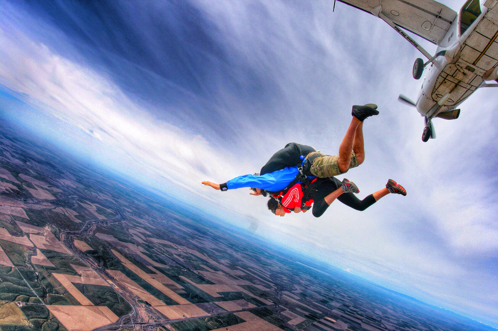

正文: -------4.16.2016更-------
鉴于评论里满眼关于钱的评论，我会再更新，并打算回答 整年都在旅行的人，经济来源是什么？ - 社会
大家说的都对，你们都有自己的道理和见解。其实每个人都有固定的思维和圈子，你觉得不可能的事情我再怎么讲可能你都觉得不可能。
大家的评论大多这几类
1你有钱，我有钱我也可以
2.认可生活态度
3.客观评价
很多说类似这样的 X100000000：
“靠家里就靠家里，理直气壮，爸妈的钱，孩子不花谁花。但就怕那种明明拿着父母钱留学旅游，还硬是不承认，认为自己很独立。
那么真要考究起来，答主15岁就留学美国，难道自己挣的钱？这么多高大上的旅游路线，全是自己花销？想想就不可能嘛，什么获得过活动奖金，那只是极少数好不好？”
但也有用自身说话的例子：
san yan
来说说自己的感受，出生在3线城市。在二线城市上大学 ，大学学的旅游专业但并没有从事这方面的工作。在大学毕业前想要送自己一个毕业旅行，于是跑到KFC做兼职 差不多一个月1000块，做了1年半，从大二下学期开始有去旅行社和酒店实习。到毕业前的一个半月拿了3500块开始我的一个人毕业旅行，家里就是普通家庭，所以出门我出门的钱全是自己打工挣来的。从小到大几乎没有出过门，第一次出去选择青年旅馆。然后一个人将近45天的旅行，遇到了很多，学到了很多。再来说说我的改变，就像答主说的那样，我开始尝试改变自己，我开始给自己制定目标，提高自己的执行力，因为资金有限我开始学习理财。所以现在每年都能送自己一个旅行，无论是近郊还是出国，至少每年一个。我想说，当你想出去的时候，时间和金钱真的就不是问题了，你在旅行中发现自己挑战自己改变自己，才是真的。我搞不懂为什么那么多人都纠结于钱的问题，你不去做就永远不会得到你想要的结果，做不成，只能说自己的愿望还不够强烈。因为旅行改变了我，每当一个人出行的时候都觉得自己的勇气被加满。写这段话的时候，我刚一个人从成都和重庆暴走回来，就是清明节的小假期再带一天年假，住在青旅，四天算上往返机票和带给同事的特产一共2800块。独立，真的是从一个人的旅行开始…不盲目切内心从容。
王祺
超级赞同，学生时代，无论是在国内或者国外，无论是出国旅行或者是国内旅行，都不需要很多钱，你是学生其实是大好时机，我的同学，我的朋友，看到我动不动就走了，动不动就出国了，一些人说，你怎么那么有时间，你不上学吗？你怎么那么有钱，你家怎么那么富裕。我心里就呵呵了，我每次放假回家飞机+火车+大客，快走也要一天一夜，你认为我们家富裕吗？永远不要让钱限制了你的行动，其实没钱没时间，往往都是在欺骗自己，你差的是行动力和平日的精打细算。精打细算其实更多的是在细算你的时间，你什么时间用来打工，你什么时间用来提升自己的能力，无论是摄影，美术，什么都不晚，但什么都要用心去花时间去学。年轻，就是我们的财富，等待，却永无停息。life is short ，but world is endless big。
感谢客观的评论：
莫青青
分享的是一种积极努力的态度而不是看她去了哪些你到不了的地方。活着，是一种态度。好身材可以不花钱，喷的人做了吗？我们住的城市郊区游一辆破自行车就可以，逛遍了吗？真的没时间吗？别一边自己不够努力不够积极抱着一身肥肉给自己找各种懒惰松懈的理由看别人秀好身材再去喷一些负能量的话了。让我们为自己、为后代，保持自己这一方小天地的正能量吧！心胸开阔，懂得欣赏，感恩之心，努力打拼，即使不能像楼主这样精彩纷呈，至少也会热爱生活，收获知足常乐的幸福以及内心的安宁。
Onana
虽然这些都要物质的支撑，可是知乎er为什么这么多人都放错了focus，好像说一句：咳，反正都是你有钱。 我觉得很搞笑，我身边很多有钱的照样不锻炼不远行不玩视频剪辑不搞摄影。经济基础好是答主的先天优势，但更重要的是她乐观积极向上还对各种事情都努力学习坚持到底的心态啊。有多少人是会去坚持锻炼身体好多年的？有多少人玩摄影玩一半觉得很难就扔边上了？有多少人不能坚持好好吃健康的食物的？穷有什么关系，穷有穷的玩法啊！可怎么闻到那么强烈的穷酸味！奈何！奈何！
cksamuelpoon
看到很多人反驳"答主说的行动力才是关键"，都是因为有钱。但有人看到答主除了有钱去世界各地旅行之外，还有更多的是冒险精神。光有钱就能玩攀岩，跳伞等高心理素质的极限运动？估计大部分人就算免费送给你玩，你都不敢去玩。另外看得出答主还是个完美主义者，除了对生活的要求外，对自己也有要求。那体型不行有钱的就保持的，还有答主所述的行动力。大把有钱人就会吃喝玩乐，只有足够行动力和意志力者才会去健身来保持自己身材。所以行动力比金钱更是关键，金钱只是锦上添花而已！
-----------------原答案--------------------------
这个问题很有意思，忍不住来答一下。
细细想来，变化还真是不少。是不是因为旅行而改变，其实也没有什么科学根据，因为人总是在成长。
要知道我回答问题总是带多多的图骗的，所以>>多图预警（应该不会太多吧？我尽量少贴几张）
总的来说分以下几个方面：
1. 尝试新鲜事物（潜水，跳伞，滑板，攀岩，徒步，露营，爬山，户外etc）
2. 热爱生活（摄影，视屏剪辑，水彩）
3. 精致自己（健身，形象）
4. 气质/见识（待人接物，谈吐）
5. 好奇世界
6. 处事不惊
先来个视频
30s的一个小视频，一些我去过的地方
【我的微博@北京小风子】
回归主题
1. 尝试新鲜事物（潜水，跳伞，滑板，攀岩，徒步，露营，爬山，户外etc）
去不同的地方经常就会有机会接触各种各样的新鲜事物，说不定就能发现自己的新爱好~ 我想尽快考下潜水证和跳伞证，这样就真正上天入地啦~（ps谁知道在哪里考跳伞证比较速度便宜请私信我:)
浮潜：
潜水
跳伞

滑板
攀岩
山地骑车（各种摔）
9天无网络无信号无洗澡徒步lol
露营
爬山：云海之上
爬楼 lol
还有各种各样...
于是打开了一个新的大门，觉得世界真好玩，好多有意思的事情，感觉好幸福。
2. 热爱生活（摄影，视屏剪辑，水彩）
几乎爱旅行的人都会爱上摄影
极光

沙漠（这张图压缩的有点厉害，不然传不上来）
当然也熟练的旅行自拍 欧耶
小巷里的茶馆
吴哥窟
还有我最爱的‘船长’照
摄影满足不了我，就开始视频剪辑的道路
去年参加的一个重走丝绸之路活动的时候做的自我介绍视频，一些见过的风景和为什么旅行
从2014年底到现在，我的【京华闯荡】旅行短片都已经7集了
我最满意的几个，如果大家喜欢，我再更新上所有的链接
【京华闯荡】第2季——阿拉斯加极光之旅：
【京华闯荡】第7季——带着外公外婆去旅行之泰国
不旅行的时候也可以画画水彩（恩没什么美术功底，因为喜欢就会去研究，简单的甜品，慢慢尝试风景啊人像等等）
3. 精致自己（健身，形象）
喜欢拍照当然也喜欢把自己拍美，于是开始努力有好的身材和好的颜
慢慢开始健身，饮食变得健康，不爱吃的蔬菜也吃得多了
也开始臭美（什么化妆，打扮啥的）
（真睫毛，天生各种毛重）
日常妆视频（其实生活中还是会省掉一些，但是主要就是睫毛膏，遮黑眼圈）
涂睫毛的技巧啊其他具体见 大学生日常裸妆/淡妆怎样做？ - 北京小风子的回答
4. 气质/见识（待人接物，谈吐）
见识的多了整个人由内而外都有一股自信的美。
我是说真的！谁以前不是个土包子，反正我以前是...

不过很多周游世界回来后的人真的，笑容都不一样了！见过不止一个例子，他们可能没有惊艳的颜，但是那自信的微笑，特别美！不一样的美。能自在和所有人都能谈笑风生的气场是我一直很佩服并且在学习的。
5. 好奇世界
我还想去南极看企鹅，海底看鲨鱼，古巴坐彩色老爷车，去埃及骑骆驼...走出了一步以后，打开了更大的世界，好像我的生活并不是我曾经的学校-宿舍-图书馆、考试-作业-睡觉 的死循环。
（天空之城：）
这个世界有太多可能性，不是我们坐在沙发上电脑前能想到的。你没迈出的一步，有人在走；你没活出的精彩，有人在经历。Live the Life, Live Your Life. 拿着手机看着别人的故事，你在想哪来的时间哪来的钱哪来的这个那个，其实都来自我们的决心与勇气。
你认为不可能的可能只是是在你人生中不可能。
6. 淡定从容、谈笑风生、处事不惊
遇人待物可以淡定从容，（然而很多时候还是大大咧咧）。以前和陌生人聊天不知从何说起，可能是自己年龄阅历不够懂得不够多知识不够广，但是人在江湖至少也看到很多，聊起来也可以滔滔不绝。
这么萌的娃们跟你say hi还不点个赞？
【我的微博：北京小风子】
【公众号：京华闯荡】 id：jinghuacd
http://weixin.qq.com/r/I0j85J-E0sKtrduH9x0x (二维码自动识别)
------------------更-----------------
对于评论里关于钱的回复：
我觉得出去一次花不了很多，主要看你怎么玩法，天天五星级当然学生负担不起啦。现在那么多特价往返，哪个合适就走起呗。年轻人住宿也没什么高要求。我真心推荐尝试青旅！不用怕不安全，都是些世界各地的年轻人，很多有意思的人，如果一个人还可以找伴~ 我想传达的是一种热爱生活，对世界充满好奇心的态度，而不是炫富。有钱人都玩跑车鞋子包包什么的了。而我们，并不需要是富二代去做这些，当你第一次踏足一次青旅你就会知道，和我们一样，脚踏实地用自己努力一步步去看世界的人很多。这并不是有钱人的特权。
我15岁去美国读书，这些年去很多地方都是就近或者去找同学玩。我想在大学期间尽可能的去看世界，让自己的见识不仅是书本和网络。我很喜欢一句话，即去看世界的大与美，也看脚下的小野花。上课期间不能出远门，也可以细心发现身边的美啊，郊区的公园和窗外的落日。比如天天路过的学校，一年四季也有不同的美：
烈日
夕阳

多云

寒冬
前段时间纽约大暴风雪还有勤劳勇敢的同学们建起了一个igloo 小冰屋
在美国课余打工也是正常，攒着的钱不乱买就可以啦~有的都是参加学校的户外club之类的去的，每次就几百美金。去年参加上面提到的丝绸之路选拔，今年还有这活动（未免广告嫌疑，删掉了举办公司名字），选上了有十几万旅行资金，丝绸之路没花完，还够去很多地方呀。可能幸运和机会吧，并没有拿家里的钱。
经常有人问：
钱哪里来？
没钱自己想办法啊，可以挣可以省。建议你算一下自己淘宝过去五年花了多少。少逛逛淘宝就有啦。出去一趟其实花不了很多，只是看你有没有这个决心和执行力。业余时间打个工啥的。2015年暑假我参加了xx办的一个“重走丝绸之路”活动，胜出了并得到旅费和2w一月工资爽歪歪啊。走完丝绸之路以后还剩的够我玩耍。方法很多，想要就去争取。问别人不去做一样没用。
平常省下的零花钱，还有打工啊。 平常上学的时候当助教，判作业，食堂打工什么的一学年能有4-5000美金~~我在美国，最低收入每小时也9快多。一礼拜20小时，一个月80*$9=$720但是一般都是600左右。一学期8个多月$600*8.5=5100 :)
你真正走出这一步以后，就发现，其实没有那么难。
共勉